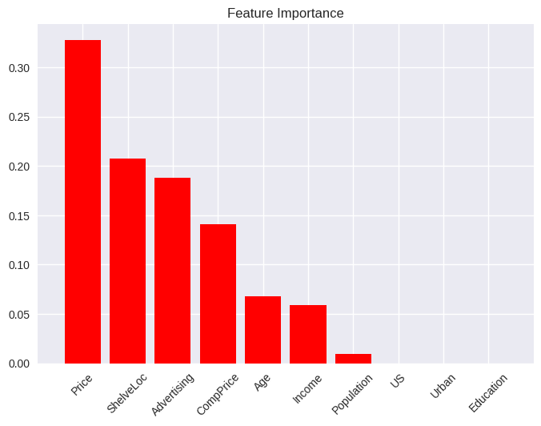
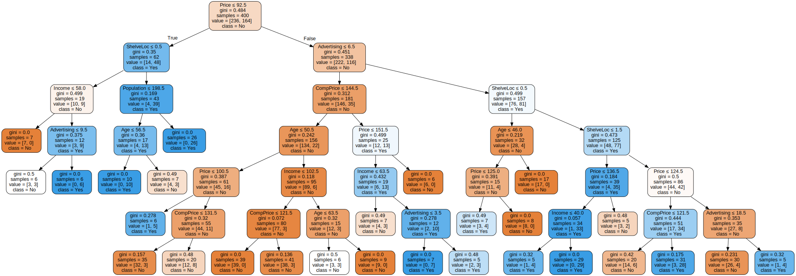
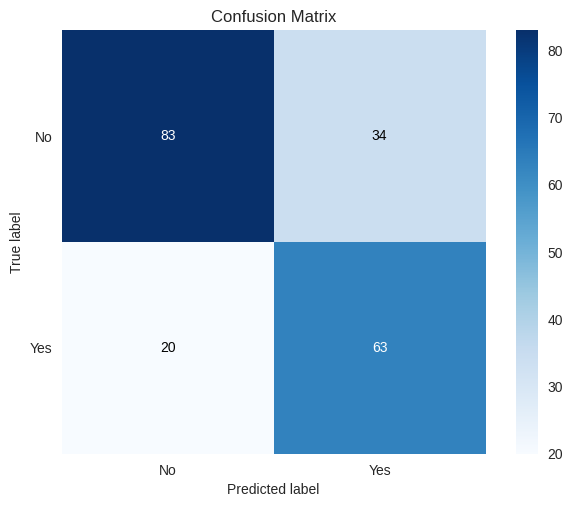
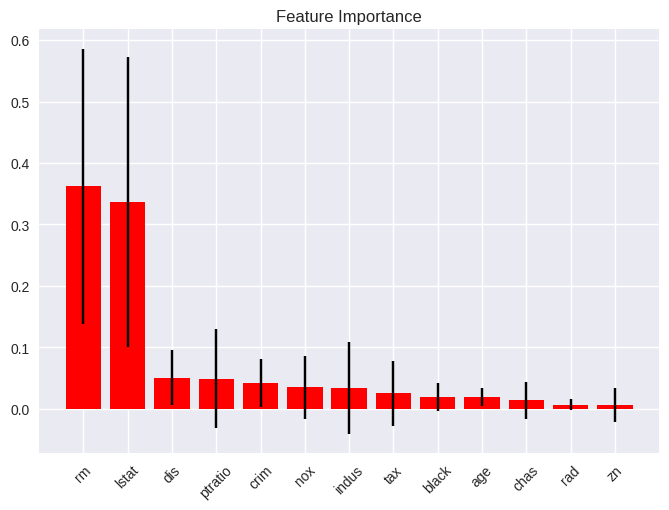
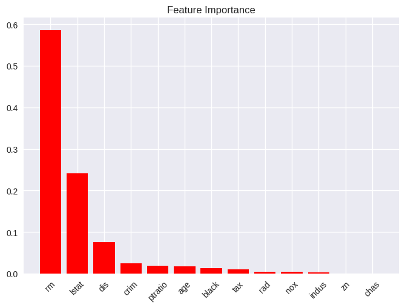

Lab 8.3: Decision Trees
Contents
Lab 8.3: Decision Trees#
# imports and setup
%matplotlib inline
import numpy as np
import pandas as pd
import seaborn as sns
import matplotlib.pyplot as plt
pd.set_option('display.max_rows', 12)
pd.set_option('display.max_columns', 12)
pd.set_option('display.float_format', '{:20,.5f}'.format) # get rid of scientific notation
plt.style.use('seaborn') # pretty matplotlib plots
8.3.1 Fitting Classification Trees#
carseats = pd.read_csv('../datasets/Carseats.csv', index_col=0)
carseats['High'] = (carseats['Sales'] > 8).map({True: 'Yes', False: 'No'})
carseats.loc[:, ['ShelveLoc', 'Urban', 'US', 'High']] = \
carseats.loc[:, ['ShelveLoc', 'Urban', 'US', 'High']].apply(pd.Categorical)
from sklearn.preprocessing import OneHotEncoder, LabelEncoder
le = LabelEncoder()
carseats['ShelveLoc'] = le.fit_transform(carseats['ShelveLoc'])
carseats['Urban'] = le.fit_transform(carseats['Urban'])
carseats['US'] = le.fit_transform(carseats['US'])
X = carseats.loc[:, 'CompPrice':'US']
y = carseats.loc[:, 'High']
from sklearn.tree import DecisionTreeClassifier, export_graphviz
tree_carseats = DecisionTreeClassifier(min_samples_leaf=5, max_depth=6)
tree_carseats.fit(X, y)
y_pred = tree_carseats.predict(X)
tree_carseats.score(X, y)
0.8775
# Feature Importance
# (pd
# .DataFrame({'Importance': tree_carseats.feature_importances_ * 100}, index=X.columns)
# .sort_values('Importance', ascending=True, axis=0)
# .plot(kind='barh', title='Feature Importance'));
from scikitplot.estimators import plot_feature_importances
plot_feature_importances(tree_carseats,
feature_names=X.columns,
x_tick_rotation=45);

from graphviz import Source
tree_carseats_graph = export_graphviz(tree_carseats,
out_file=None,
feature_names=X.columns,
class_names=tree_carseats.classes_,
filled=True,
rounded=True,
special_characters=True)
Source(tree_carseats_graph)

from sklearn.model_selection import train_test_split
X_train, X_test, y_train, y_test = train_test_split(X, y, train_size=0.5, test_size=0.5, random_state=42)
tree_carseats_tt = DecisionTreeClassifier(min_samples_leaf=5, max_depth=6)
tree_carseats_tt.fit(X_train, y_train)
y_pred = tree_carseats_tt.predict(X_test)
tree_carseats_tt.score(X_train, y_train), tree_carseats_tt.score(X_test, y_test)
(0.9, 0.73)
from sklearn.metrics import classification_report
print(classification_report(y_test, y_pred))
precision recall f1-score support
No 0.81 0.71 0.75 117
Yes 0.65 0.76 0.70 83
accuracy 0.73 200
macro avg 0.73 0.73 0.73 200
weighted avg 0.74 0.73 0.73 200
# from sklearn.metrics import confusion_matrix, accuracy_score
# pd.DataFrame(confusion_matrix(y_test, y_pred), index=['No', 'Yes'], columns=['No', 'Yes'])
from scikitplot.metrics import plot_confusion_matrix
plot_confusion_matrix(y_test, y_pred);

8.3.2 Fitting Regression Trees#
boston = pd.read_csv('../datasets/Boston.csv', index_col=0)
X = boston.loc[:, 'crim':'lstat']
y = boston.loc[:, 'medv']
X_train, X_test, y_train, y_test = train_test_split(X, y, train_size=0.5, test_size=0.5, random_state=42)
from sklearn.tree import DecisionTreeRegressor
tree_boston = DecisionTreeRegressor(min_samples_leaf=5, max_depth=2)
tree_boston.fit(X_train, y_train)
y_pred = tree_boston.predict(X_test)
tree_boston.score(X_train, y_train), tree_boston.score(X_test, y_test)
(0.7461422238084278, 0.6349503884695383)
tree_boston_graph = export_graphviz(tree_boston,
out_file=None,
feature_names=X.columns,
filled=True,
rounded=True,
special_characters=True)
Source(tree_boston_graph)

8.3.3 Bagging and Random Forests#
from sklearn.ensemble import RandomForestRegressor
from sklearn.metrics import mean_squared_error
boston_bag = RandomForestRegressor(max_features=13, random_state=42)
boston_bag.fit(X_train, y_train)
y_pred = boston_bag.predict(X_test)
mean_squared_error(y_test, y_pred)
14.667482976284576
sns.regplot(y_pred, y_test);
/opt/hostedtoolcache/Python/3.8.13/x64/lib/python3.8/site-packages/seaborn/_decorators.py:36: FutureWarning: Pass the following variables as keyword args: x, y. From version 0.12, the only valid positional argument will be `data`, and passing other arguments without an explicit keyword will result in an error or misinterpretation.
warnings.warn(

boston_rf = RandomForestRegressor(max_features=6, random_state=42, n_estimators=100)
boston_rf.fit(X_train, y_train)
y_pred = boston_rf.predict(X_test)
mean_squared_error(y_test, y_pred)
12.878658150197625
sns.regplot(y_pred, y_test);
/opt/hostedtoolcache/Python/3.8.13/x64/lib/python3.8/site-packages/seaborn/_decorators.py:36: FutureWarning: Pass the following variables as keyword args: x, y. From version 0.12, the only valid positional argument will be `data`, and passing other arguments without an explicit keyword will result in an error or misinterpretation.
warnings.warn(

# Feature Importance
plot_feature_importances(boston_rf,
feature_names=X.columns,
x_tick_rotation=45);

8.3.4 Boosting#
from sklearn.ensemble import GradientBoostingRegressor
boston_gb = GradientBoostingRegressor(n_estimators=500, learning_rate=0.01, max_depth=4, random_state=42)
boston_gb.fit(X_train, y_train)
y_pred = boston_gb.predict(X_test)
mean_squared_error(y_test, y_pred)
16.770864624119454
plot_feature_importances(boston_gb,
feature_names=X.columns,
x_tick_rotation=45);

# Partial Dependence Plots
from sklearn.inspection import plot_partial_dependence
plot_partial_dependence(boston_gb, X_train, [5, 12], feature_names=X.columns);
/opt/hostedtoolcache/Python/3.8.13/x64/lib/python3.8/site-packages/sklearn/utils/deprecation.py:87: FutureWarning: Function plot_partial_dependence is deprecated; Function `plot_partial_dependence` is deprecated in 1.0 and will be removed in 1.2. Use PartialDependenceDisplay.from_estimator instead
warnings.warn(msg, category=FutureWarning)
boston_gb2 = GradientBoostingRegressor(n_estimators=500, learning_rate=0.2, max_depth=4, random_state=42)
boston_gb2.fit(X_train, y_train)
y_pred = boston_gb2.predict(X_test)
mean_squared_error(y_test, y_pred)
15.275731192364155
plot_feature_importances(boston_gb2,
feature_names=X.columns,
x_tick_rotation=45);

8.3.5 Bayesian Additive Regression#
# TODO